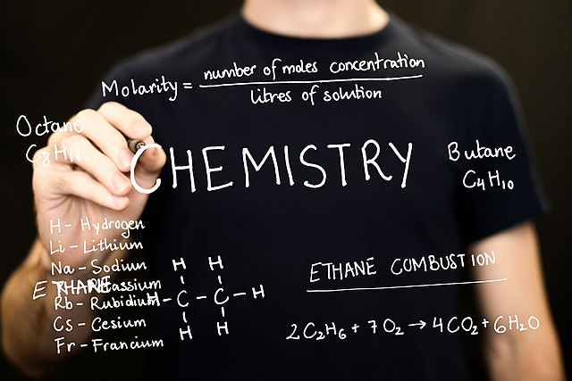

01 Introduction

1. General Concepts in Chemistry
Chemistry is the study of matter and the changes it undergoes.
Matter is anything that occupies space and has mass.
A substance is a form of matter that has a definite composition and distinct properties.
A mixture is a combination of two or more substances in which the substances retain their distinct identities.
- Homogenous mixture – composition of the mixture is the same throughout.
- Heterogeneous mixture – composition is not uniform throughout.
An element is a substance that cannot be separated into simpler substances by chemical means.
A compound is a substance composed of atoms of two or more elements chemically united in fixed proportions.
A physical change does not alter the composition or identity of a substance.
A chemical change alters the composition or identity of the substance(s) involved.
An extensive property of a material depends upon how much matter is being considered (mass, length, volume, etc.).
An intensive property of a material does not depend upon how much matter is being considered (density, temperature, color, etc.).
Requirements
- Understand the concepts
2. Measurement
International system of units
In 1960, the General Conference of Weights and Measures, the international authority on units, proposed a revised metric system called the International System of Units (abbreviated SI, from the French System International d’Unites).
| Base Quantity | Name of Unit | Symbol |
|---|---|---|
| Length | meter | m |
| Mass | kilogram | kg |
| Time | second | s |
| Electrical current | ampere | A |
| Temperature | kelvin | K |
| Amount of substance | mole | mol |
| Luminous intensity | candela | cd |
| Prefix | Symbol | Meaning | Example |
|---|---|---|---|
| tera- | T | \(10^{12}\) | 1 Tm = \(1\times 10^{12}\,\text{m}\) |
| giga- | G | \(10^9\) | 1 Gm = \(1\times 10^9\,\text{m}\) |
| mega- | M | \(10^6\) | 1 Mm = \(1\times 10^6\,\text{m}\) |
| kilo- | k | \(10^3\) | 1 km = \(1\times 10^3\,\text{m}\) |
| deci- | d | \(10^{-1}\) | 1 dm = \(1\times 10^{-1}\,\text{m}\) |
| centi- | c | \(10^{-2}\) | 1 cm = \(1\times 10^{-2}\,\text{m}\) |
| milli- | m | \(10^{-3}\) | 1 mm = \(1\times 10^{-3}\,\text{m}\) |
| micro- | \(\mu\) | \(10^{-6}\) | 1 \(\mu\)m = \(1\times 10^{-6}\,\text{m}\) |
| nano- | n | \(10^{-9}\) | 1 nm = \(1\times 10^{-9}\,\text{m}\) |
| pico- | p | \(10^{-12}\) | 1 pm = \(1\times 10^{-12}\,\text{m}\) |
Mass and weight
Mass – measure of the quantity of matter
SI unit of mass is the kilogram (kg)
\[1\,\text{kg} = 1000\,\text{g} = 1\times10^3\,\text{g}\]
Weight – force that gravity exerts on an object
Volume
Volume – SI derived unit for volume is cubic meter (\(\text{m}^3\))
\[1\,\text{mL} = 1\,\text{cm}^3=1\times10^{-6}\,\text{m}^3\] \[1\,\text{L} = 1\,\text{dm}^3 = 1000\,\text{mL} =1\times10^{-3}\,\text{m}^3\]
Density
Density is the mass of an object divided by its volume.
\[d=\frac{m}{V}\] \[1\,\text{g/cm}^3 = 1\,\text{g/mL} = 1000\,\text{kg/m}^3\]
Temperature
\[\text{?}\,^\circ\text{C} = (^\circ\text{F}-32\,^\circ\text{F})\times\frac{5\,^\circ\text{C}}{9\,^\circ\text{F}}\]
\[\text{?}\,^\circ\text{F} = \frac{9\,^\circ\text{F}}{5\,^\circ\text{C}}\times(^\circ\text{C})+32\,^\circ\text{F}\]
\[\text{? K}=(^\circ\text{C}+273.15\,^\circ\text{C})\frac{1\,\text{K}}{1\,^\circ\text{C}}\]
\[\text{?}\,^\circ\text{C} = (\text{K}-273.15\,\text{K})\frac{1\,^\circ\text{C}}{1\,\text{K}}\]
Example: The mass of a piece of gold is 45.3 g, the volume is 2.35 \(\text{cm}^3\). What is the density?
Answer:
\[\begin{align*}
d & = \frac{m}{V} \\
& = \frac{45.3\,\text{g}}{2.35\,\text{cm}^3} \\
& = 19.3\,\text{g/cm}^3
\end{align*}\]
Example: Convert temperature from Celsius to Fahrenheit or from Fahrenheit to Celsius. (a) 37 \(^\circ\text{C}\); (b) 74 \(^\circ\text{F}\).
Answer:
(a)
\[\begin{align*} \frac{9\,^\circ\text{F}}{5\,^\circ\text{C}}\times(37\,^\circ\text{C})+32\,^\circ\text{F} = 99\,^\circ\text{F} \end{align*}\]
\[\begin{align*} (74\,^\circ\text{F}-32\,^\circ\text{F})\times\frac{5\,^\circ\text{C}}{9\,^\circ\text{F}}=23\,^\circ\text{C} \end{align*}\]
Requirements
- Learn how to calculate density.
- Know how to convert units from one to another.
3. Numbers
3.1 Scientific Notation
All numbers can be expressed in the form
\[N\times10^n\]
where \(N\) is a number btween 1 and 10 and \(n\), the exponent, is a positive or negative integer. Any number expressed in this way is said to be written in scientific notation.
For example,
\[568.762 = 5.68762\times10^2\]
because the decimal point is moved to the left by two places and \(n=2\).
\[0.00000772 = 7.72\times10^{-6}\]
because the decimal point is moved to the right by 6 places and \(n=-6\).
Addition and Subtraction
First write each quantity with the same exponent; then, combine them.
\[4.31\times10^4 + 3.9\times10^3 = 4.31\times10^4+0.39\times10^4=4.70\times10^4\]
Multiplication and Division
To multiply numbers, we multiply \(N_1\) and \(N_2\) in the usual way, but add the exponents together. To divide, we divide \(N_1\) and \(N_2\) as usual and subtract the exponents.
\[(8.0\times10^4)\times(5.0\times10^2)=(8.0\times5.0)(10^{4+2})=40\times10^6=4.0\times10^7\]
\[\frac{8.5\times10^4}{5.0\times10^9}=\frac{8.5}{5.0}\times10^{4-9}=1.7\times10^{-5}\]
3.2 Significant Figures
OpenStax 1.5 Measurement Uncertainty, Accuracy, and Precision. Brown 1.6 Uncertainty in Measurement
Rules
- Any digit that is not zero is significant.
- Zeros between nonzero digits are significant.
- Zeros to the left of the first nonzero digit are not significant.
- If a number is greater than 1, then all the zeros written to the right of the decimal point count as significant figures.
- For numbers that do not contain decimal points, the trailing zeros may or may not be significant (There are different definitions in different textbooks). Thus, using scientific notation is recommended to avoid the ambiguity.
Handling significant figures in calculations
- In addition and subtraction, the answer cannot have more digits to the right or the decimal point than either of the original numbers.
- In multiplication and division, the number of significant figures in the final product or quotient is determined by the original number that has the smallest number of significant figures.
- Exact numbers obtained from definitions or by counting numbers of objects can be considered to have an infinite number of significant figures.
3.3 Accuracy and Precision
Accuracy tells us how close a measurement is to the true value of the quantity that was measured.
Precision refers to how closely two or more measurements of the same quantity agree with one another.
3.4 Significant Figures in Measurement
The numbers of measured quantities, unlike defined or directly counted quantities, are not exact. To measure the volume of liquid in a graduated cylinder, you should make a reading at the bottom of the meniscus, the lowest point on the curved surface of the liquid. In the following figure, the bottom of the meniscus in this case clearly lies between the 21 and 22 markings, meaning the liquid volume is certainly greater than 21 mL but less than 22 mL. The meniscus appears to be a bit closer to the 22-mL mark than to the 21-mL mark, and so a reasonable estimate of the liquid’s volume would be 21.6 mL. In the number 21.6, then, the digits 2 and 1 are certain, but the 6 is an estimate. Some people might estimate the meniscus position to be equally distant from each of the markings and estimate the tenth-place digit as 5, while others may think it to be even closer to the 22-mL mark and estimate this digit to be 7. Note that it would be pointless to attempt to estimate a digit for the hundredths place, given that the tenths-place digit is uncertain. In general, numerical scales such as the one on this graduated cylinder will permit measurements to one-tenth of the smallest scale division. The scale in this case has 1-mL divisions, and so volumes may be measured to the nearest 0.1 mL.
Example: Determine the number of significant figures.
(a) 358 m; (b) 35.1 g; (c) 0.932 kg; (d) 0.0068 m; (e) \(9.320\times 10^{23}\,\text{molecules}\); (f) 3400 mL.
Answer:
(a) 3; (b) 3; (c) 3; (d) 2; (e) 4; (f) 2 or 4.
Example: Do the following operations giving answers with correct number of significant figures.
(a) \(3245 + 1.649\); (b) \(54.3- 3.32\); (c) \(3.14\times 2.5\); (d) \(0.0029\div 92.1\); (e) \(6.02\times10^{-4} - 1.1\times10^{-5}\).
Answer:
(a) \(3247\); (b) \(51.0\); (c) \(7.8\); (d) \(0.000031\); (e) \(5.91\times10^{-4}\).
Requirements
- Learn how to use scientific notation. Make a habit to use scientific notation.
- Learn how to determine siginificant figures.
4. Dimensional Analysis
- Determine which unit conversion factor(s) are needed.
- Carry units through calculation.
- If all units cancel except for the desired unit(s), then the problem was solved correctly.
\[\text{given unit}\times\frac{\text{desired unit}}{\text{given unit}}=\text{desired unit}\]
Example:The mass of a competition frisbee is 125 g. Convert its mass to ounces using the unit conversion factor derived from the relationship 1 oz = 28.349 g.
Answer:
\[x\,\text{oz}=125\,\text{g}\times\frac{1\,\text{oz}}{28.349\,\text{g}}=4.41\,\text{oz}\]
Example:What is the density of common antifreeze in units of g/mL? A 4.00 qt sample of the antifreeze weighs 9.26 lb.
Answer:
\[\frac{9.26\,\text{lb}}{4.00\,\text{qt}}\times\frac{453.59\,\text{g}}{1\,\text{lb}}\times\frac{1.0567\,\text{qt}}{1\,\text{L}}\times\frac{1\,\text{L}}{1000\,\text{mL}}=1.11\,\text{g/mL}\]
Requirements
- Learn how to do unit conversion.
Practice Questions
Identify which are pure substances and which are mixtures. (a) diamond; (b) milk; (c) air; (d) wine.
Answer: pure substance: (a)Which of the following is an example of a physical property?
- gasoline burns
- heating lead until it melts
- a freshly cut apple turns brown
- dynamite explodes
- meat rots if it is not refrigerated
Answer: B
- Which one of the following represents a chemical change?
- ice floats on top of liquid water
- breaking glass
- a silver platter tarnishes
- when cooled to 0 \(^\circ\)C, liquid water becomes ice
- mixing iron filings and sand at room temperature
Answer: C
Rank the following values from the smallest to the largest (a) 28600; (b) \(1.21\times10^5\); (c) \(4.32\times10^{-6}\); (d) \(7.20\times10^{-2}\).
Answer: c < d < a < bConvert 25.00 \(^\circ\)C to the temperature in Kelvin.
Answer: 298.15 KExpress the number 0.0215 in scientific notation.
Answer: \(2.15\times10^{-2}\)Express the fraction 1/23 as a decimal to 4 significant figures.
Answer: \(4.348\times10^{-2}\)After carrying out the following operations, how many significant figures are appropriate to show in the result? 8.5201 + 1.93
Answer: 10.45The density of iron is 7.87 g/cm\(^3\). What is the volume of 25.7 g iron?
Answer: 3.26 cm\(^3\)Many home freezers maintain a temperature of \(0.00\) \(^\circ\)F. Express this temperature in \(^\circ\)C.
Answer: -17.8 \(^\circ\)C
Copyright
Copyright(C) 2022 Yu Wang

This work is licensed under a Creative Commons Attribution 4.0 International License.